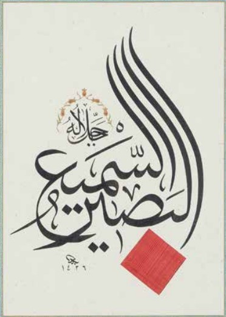

Kitabımızda insana verilen üç nimet (kulak, göz, akıl) sık sık vurgulanır:
67:23
vece’ale lekumus-sem’a vel-ebsâra vel-ef-ide
“O'dur sizi inşâ eden; size işitme, gözme ve (akleden) kalpler veren

Bu iki isim sık sık yan yana geliyor:
42:11
leyse kemiślihi şey, vehuves-semî’ul-basîr
Hiçbir şey, O'nun benzeri gibi bile olamaz. O duyandır, görendir.
Bazı ayetlerde "iştmek" ve "bilmek" yan yana geçiyor:

2:127
rabbenâ tekabbel minnâ, inneke entes-semî’ul-’alîm
Rabbimiz! Bunu bizden kabul et; Sensin her şeyi bilen, her şeyi duyan!”